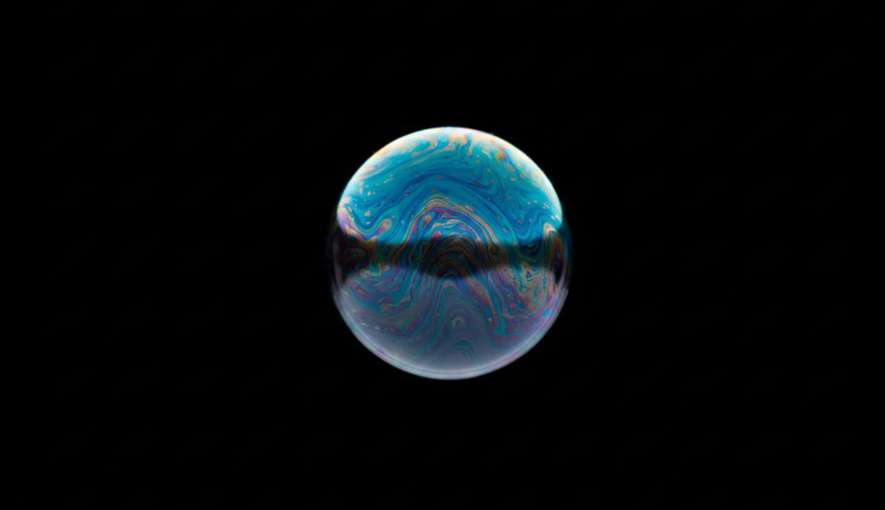
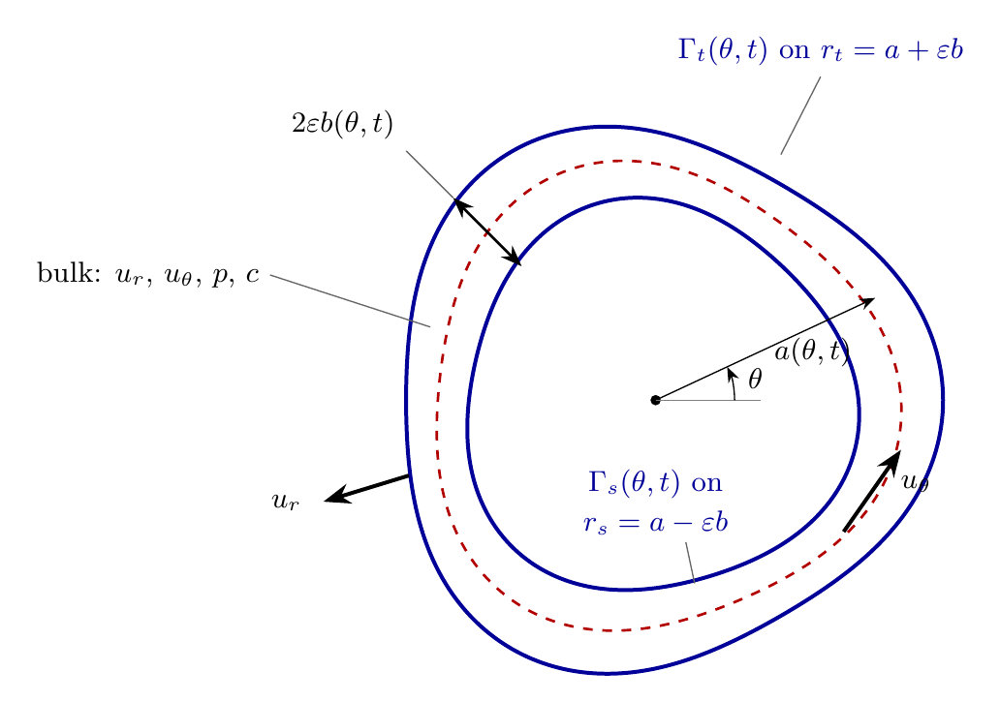

Extending the classical theory of flat soap films to a film bent into a closed ring, where curvature introduces physics a flat sheet simply cannot show, using long-wave asymptotics and a symbolic computer-algebra reduction.
A soap film is a few microns thick but centimetres across, so it behaves almost like a two-dimensional fluid. Classical theory describes flat films very well. I am working out what changes when the film is curved into a closed annular ring.
The project, advised by Stefan Llewellyn Smith and Padmini Rangamani at UC San Diego, takes the well-established flat soap-film theory and asks for its analogue in polar geometry, where the thin direction is radial and the slow dynamics live around the ring. It is ongoing, unpublished research, so this page stays at the level of the physical ideas and the method; the derivations and code are not shown.

Flat soap-film theory reduces the full three-dimensional flow to a compact set of equations for the in-plane motion, the thickness, and the surfactant. The question is what the same reduction looks like once the film is wrapped into a ring.
Think of the cross-section of a cylindrical soap bubble, or a thin liquid ring lying in a plane. Bending the film introduces effects that are absent by symmetry in a flat sheet, and the goal is to capture all of them in one consistent reduced model rather than bolting them on one at a time.
Curvature means a static film needs a pressure jump across it just to hold its shape, the familiar bubble pressure.
Swirl around the ring pushes the film outward, a genuinely new forcing term with no flat-film counterpart.
Surface-tension gradients now act through the curved normal pressure, not only through the in-plane surface stress.
If the ring's centreline is not a perfect circle, surface tension snaps it back, a fast mode the flat theory removes by assuming symmetry.
The full problem is a three-dimensional free-surface flow with surfactant on both faces. The aim is a small, closed set of one-dimensional evolution equations that captures its long-time behavior, derived rigorously rather than guessed.
The tool is a long-wave (lubrication) asymptotic expansion: because the film is thin compared with the scale of variation around the ring, the dynamics collapse onto a slow manifold. Carrying that expansion out by hand, in polar geometry, with two independent surfaces, soluble surfactant, and all the metric corrections, would run to thousands of terms, so I do it with a symbolic computer-algebra workflow.
The workflow follows a residual-driven idea: start from the crudest possible guess, substitute it into every governing equation and boundary condition to measure how badly each is violated, use simple solvability operators to turn those residuals into corrections, and repeat until nothing is left to correct. Because the fixed point is defined by all residuals vanishing, each individual update can stay simple, and correctness is certified at the end by checking the residuals and by physical sanity tests rather than by trusting any single algebraic step.
A symbolic derivation this long is only believable if it reproduces what is already known and survives independent physical checks.
The reduced model is built so that the familiar cases, including the flat-film theory and the symmetric ring, fall out as special cases of the general result rather than as separate derivations. Recovering those known limits is the first test; a verification suite of physical sanity checks is the second. The general formulation keeps the two surfaces independent and lets the ring's centreline move, so the simpler symmetric configurations are recovered by substitution at the end.
The work is in progress and unpublished. The aim is a single consistent reduced model for the curved film, with the longer-term interest in extending the same machinery to other geometries.